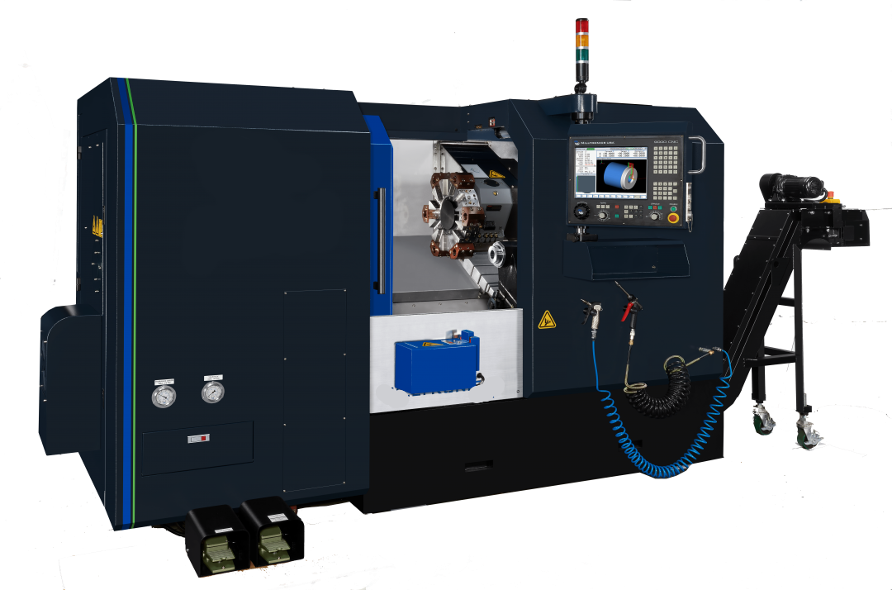

Tool Room Lathe
ML35II/80
With a generous swing of 36.2″, length of 87″ and a 10″ spindle bore, the ML35II/80 is a workhorse. Featuring a 35 HP, 900 RPM spindle it produces 1,850 ft-lbs of torque. Standard with an 8 station electro-mechanical turret.
ExploreTool Room Lathe
ML35II/120
With a generous swing of 36.2″, length of 120″ and a 6″ spindle bore, the ML35II/120 is an industry workhorse. Featuring a 35 HP, 900 RPM spindle it produces 1,850 ft-lbs of torque. Standard with an 8 station electro-mechanical turret.
ExploreTool Room Lathe
ML35II/160
With a generous swing of 36.2″, length of 120″ and a 6″ spindle bore, the ML35II/120 is an industry workhorse. Featuring a 35 HP, 900 RPM spindle it produces 1,850 ft-lbs of torque. Standard with an 8 station electro-mechanical turret.
ExploreTool Room Lathe
ML35II/200
With a generous swing of 36.2″, length of 200″ and a 6.02″ spindle bore, the ML35II/200 is an industry workhorse. Featuring a 35 HP, 900 RPM spindle it produces 1,850 ft-lbs of torque. Standard with an 8 station electro-mechanical turret.
ExploreTool Room Lathe
ML35II/240
With a generous swing of 36.2″, length of 240″ and a 6.02″ spindle bore, the ML35II/240 is an industry workhorse. Featuring a 35 HP, 900 RPM spindle it produces 1,850 ft-lbs of torque. Standard with an 8 station electro-mechanical turret.
ExploreTool Room Lathe
ML40II/80
With a generous swing of 39.7″, length of 87″ and a 6.02″ spindle bore, the ML40II/80 is a workhorse. Featuring a 35 HP, 900 RPM spindle it produces 1,850 ft-lbs of torque. Standard with an 8 station electro-mechanical turret.
ExploreTool Room Lathe
ML40II/120
With a generous swing of 39.7″, length of 120″ and a 6.02″ spindle bore, the ML40II/120 is versatile machine. Featuring a 35 HP, 900 RPM spindle it produces 1,850 ft-lbs of torque. Standard with an 8 station electro-mechanical turret.
ExploreTool Room Lathe
ML40II/160
With a generous swing of 39.7″, length of 160″ and a 6.02″ spindle bore, the ML40II/160 is versatile machine. Featuring a 35 HP, 900 RPM spindle it produces 1,850 ft-lbs of torque. Standard with an 8 station electro-mechanical turret.
ExploreTool Room Lathe
ML40II/200
With a generous swing of 39.7″, length of 200″ and a 6.02″ spindle bore, the ML40II/200 is versatile machine. Featuring a 35 HP, 900 RPM spindle it produces 1,850 ft-lbs of torque. Standard with an 8 station electro-mechanical turret.
ExploreTool Room Lathe
ML40II/240
With a generous swing of 39.7″, length of 240″ and a 6.02″ spindle bore, the ML40II/240 is versatile machine. Featuring a 35 HP, 900 RPM spindle it produces 1,850 ft-lbs of torque. Standard with an 8 station electro-mechanical turret.
ExploreSL SERIES CNC LATHES
SL Series CNC Lathes
The Milltronics SLII Series CNC lathes offer a great combination of features and performance at an attractive price. They are well built, reliable, and easy to use.
The SLII Series machines feature robust true slant bed castings, linear motion guide roller ways, direct coupled ballscrews, and the 9000 Series control.
Slant-Bed Turning Center
SL6-II
The SL6-II has a 6″ 3-jaw chuck, a maximum turning diameter of 12″, maximum turning length of 13″. This model has a 17 HP spindle motor and a 6,000 RPM spindle. Standard with a 12-station auto turret.
Explore
Slant-Bed Turning Center
SL8-II
The SL8-II has an 8″ 3-jaw chuck, a maximum turning diameter of 14″, maximum turning length of 20.7″ and a 3.2″ spindle bore. This popular size machine has a 22 HP spindle motor and a 4,000 RPM spindle. Standard with a 12-station auto turret. Options include chip conveyor, tailstock, and tool presetter.
ExploreSlant-Bed Turning Center
SL10-II
Step up to the SL10-II, featuring a 10″ 3-jaw chuck, 3.74″ spindle bore and maximum turning length of 29.9″. This model has a 30 HP spindle motor and 12 tools in the turret. Options include: chip conveyor, tailstock, parts catcher, and tool presetter.
Explore